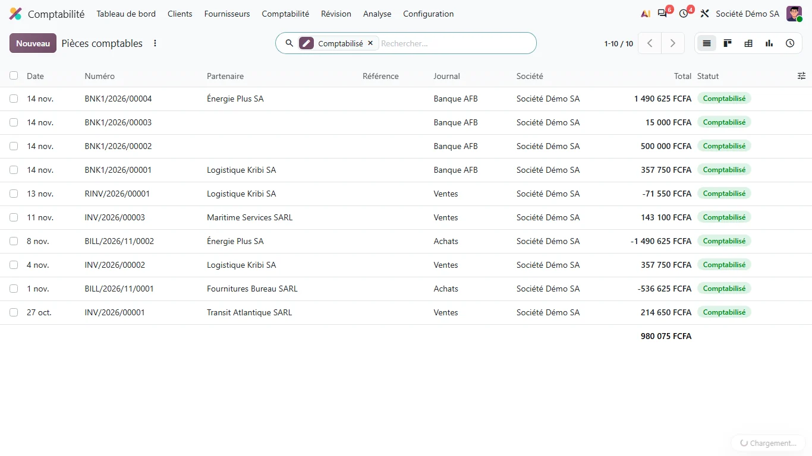

Enregistrer une opération diverse (et la faire valider)
Objectif. Passer une écriture manuelle (impôts, provisions, régularisations) avec séparation des tâches.
Menu Odoo 15Comptabilité > Comptabilité > Pièces comptables
Étapes
- Saisie : Nouveau, journal Opérations diverses, date, référence et lignes (compte, partenaire, débit ou crédit).
- Enregistrez sans comptabiliser : la pièce reste en Brouillon.
- Validation : une autre personne filtre les pièces en brouillon (liste ci-dessous), contrôle la pièce et ses justificatifs.
- Le validateur clique sur Comptabiliser.


À vérifier
- Aucune pièce n'est comptabilisée par la personne qui l'a saisie.
- Chaque pièce a sa référence et son justificatif.
À éviter
- N'utilisez pas les opérations diverses pour une facture ou un paiement : utilisez leur menu.
Exercice
Saisissez une provision en brouillon et faites-la comptabiliser par un collègue.